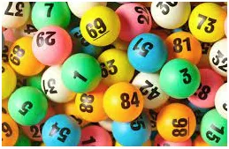

O tym, że statystyka nie jest kłamstwem tylko tanią, genialną metodą liczenia wielkich zbiorów.
To będzie odpowiedź na pytanie dlaczego losowanie "w ciemno" daje zawsze prawie taki sam wynik?
Zanim słowo o sondażach warto przypomnieć, że techniki losowania prób reprezentatywnych są bardzo stare. Wyobraźmy sobie, że mamy kupić 10 ton ziarna siewnego i chcemy się przekonać, jaki procent zasianego ziarna da plon. Mamy wykonać próbę kiełkowania, oczywiście niecałego tylko próbki. To jest kluczowy moment. Będziemy badać 1000 ziaren, taka liczba pozwoli na sprawdzenie, czy dobrych ziaren jest około 95 %, czy poniżej 90 %, co byłoby już sygnałem, że mamy słabe ziarno.

Kluczem jest zdanie: Próba jest losowa, jeśli każdy element badanej populacji ma identyczne szanse trafienia próby. W sondażach komputer losuje 1000 numerów PESEL, potem jest kłopot, bo polowa ludzi nie odpowiada albą są na wakacjach, chorują, itp. Z ziarnem jest łatwiej, musimy mieć tylko pewność, że jest dobrze wymieszane. Ne potrzeby tego wpisu zrobiłem zbiór 10 milionów zer i jedynek, gdzie 9,5 mln to nasiona dobre (jedynki) (95%) oraz 1/2 miliona to zera, czyli nasiona złe, (5%). Z tej masy losuję sobie 1 tysiąc, rozkładam je na mokrej ligninie (kwadrat 32 x nasiona 32, gdzie w ostatnim rzędzie brakuje 24 sztuki), po kilku, kilkunastu dniach wiem, ile wykiełkowało.
Zrobiłem 10 takich losowań z tego samego zbioru i co nam wyszło:
julia> sum(nasiona[sortperm(rand(10^7))][1:1000])./1000=0.958
julia> sum(nasiona[sortperm(rand(10^7))][1:1000])./1000=0.95
julia> sum(nasiona[sortperm(rand(10^7))][1:1000])./1000=0.959
julia> sum(nasiona[sortperm(rand(10^7))][1:1000])./1000=0.948
julia> sum(nasiona[sortperm(rand(10^7))][1:1000])./1000=0.951
julia> sum(nasiona[sortperm(rand(10^7))][1:1000])./1000=0.955
julia> sum(nasiona[sortperm(rand(10^7))][1:1000])./1000=0.951
julia> sum(nasiona[sortperm(rand(10^7))][1:1000])./1000=0.947
julia> sum(nasiona[sortperm(rand(10^7))][1:1000])./1000=0.956
julia> sum(nasiona[sortperm(rand(10^7))][1:1000])./1000=0.935
Wyniki tych prób to przedział 93,5% do 95,9. W realu wykonamy jeden pomiar, ale zawsze będziemy przekonani, że jest to znacznie ponad 90%, gdzieś 93 albo 94 albo 95 albo 96%. Gdy zrobimy tych pomiarów nie 10 tylko 100 będziemy się kręcić wokół liczby 95% z pewnym błędem, ale koszt pomiaru jest znikomy do wartości inwestycji i zgadzamy się na to.
Wynik jednego losowania nie ma żadnego związku z kolejnym, dlatego systemy "na wygraną w lotto" na podstawie kombinacji losowanych wcześniej to czysta ignorancja.
Ciekawe i ważne: 1000 ziaren daje nam błąd ok. +-2%, nie ma znaczenia czy wylosujemy je z 1 miliona czy z 1 miliarda. Zbadanie z taką samą dokładnością ilu jest mańkutów w Estonii i w Chinach wymaga takiej samej próby np. 1000.
W tym wpisie oszczędziłem czytelnikom wykładu o przedziałach ufności, wielu analityków nie rozumie tego i żyją szczęśliwie.
Paweł Klimczewski